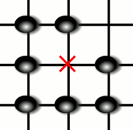
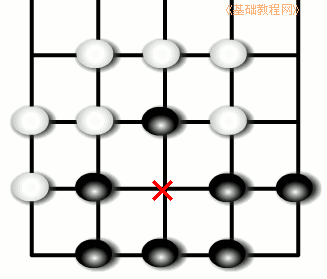

围棋入门基础教程
作者：TeliuTe 来源：基础教程网
进入中盘后，双方必然会短兵相接，进行包围和反包围，下面我们来看一个练习；
1、两眼活棋
1）眼：吃过子的地方，或者自己摆出来的空点，这个就是“眼”或眼位，
由于四周都是自己的子，因此在不吃子的时候，对方不能在这里落子；

2）当外面的气都被堵住以后，才可以往眼里下子，因为这时候是吃子，吃掉对方自己就有气了；
3）因而，要想不被对方吃子，成为一块活棋，就得有两个眼，
他想在这个眼里放子时，那边还一口气，他想在那边眼放子时，这边还一口气，吃不了子它自己就会被吃掉；
2、假眼
1）做眼的子里，有一个没连在一起，被断开的眼就是假眼，最后也会被对方“破眼”；

2）这时候的棋形也叫“打劫”，白子刚吃过一个黑子后，黑子不能立刻吃回去，否则你吃过来我吃回去，来来回回就没完了，
这时候要隔一手，这次不能吃，再到下一次走的时候，就可以提回来；
3）跟打劫不同的是，如果棋形不同，就可以立即吃回来，比如“打二还一”，被吃了两个，吃回去了一个；
本节学习了真眼、假眼和打劫的基础知识，如果你成功地完成了练习，请继续学习下一课内容；
本教程由86团学校TeliuTe制作|著作权所有
基础教程网：http://teliute.org/
美丽的校园……
转载和引用本站内容，请保留作者和本站链接。